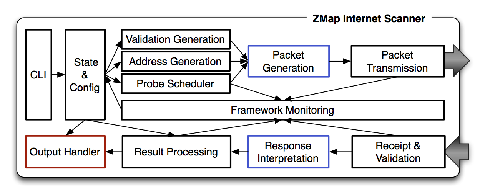

ZMap · Introduction
Introduction
ZMap is a modular, open-source network scanner specifically architected for performing Internet-wide scans and is capable of comprehensively scanning the public IPv4 address space on a single port in under 45 minutes, at 97% of the theoretical maximum speed of gigabit ethernet. ZMap is designed to perform single packet scans, such as TCP SYN and ICMP Echo Request scans, against the IPv4 address space. The scanner is written in C and is designed for use on Linux, but is otherwise platform independent.
Scanner Architecture
ZMap is capable of performing rapid scans because it maintains no local state for individual scanned hosts. Instead of storing the addresses it has already scanned, ZMap selects addresses using a random permutation of a cyclic multiplicative group. In order to distinguish between probe responses and background traffic, it overloads unused values in each sent packet (in a manner similar to SYN cookies). In addition, ZMap implements scan-optimized components of the network stack in user space instead of relying on general purpose components in the Linux kernel.
ZMap currently supports TCP port scanning and ICMP echo scanning, but utilizes a modular interface in which additional scan types can easily be developed. In our architecture, scan details such as address selection, response validation, output, and rate-limiting are handled by the ZMap framework. Adding new scan types requires only the implementation of callbacks to create probe packets and to classify responses. The overall scanner architecture is shown below:
Generating and Sending Probe Packetsg
The packet generation component of ZMap operates across one or more threads, each of which maintains a tight loop that sends Ethernet-level packets through a Linux raw socket. ZMap sends packets at the Ethernet layer in order to cache packet values and reduce unnecessary kernel overhead for each packet. For example, the Ethernet header, minus the packet checksum, will never change during a scan. By generating and caching the Ethernet packet layer, we prevent the Linux kernel from performing routing lookup, an arpcache lookup, and netfilter checks for every packet. ZMap supports both blacklisting and whitelisting through the use of radix trees (also known as Patricia or prefix trees), a trie specifically designed to handle ranges and frequently used by routing tables.
In order to avoid overloading destination networks and to provide more consistent results in the case of transient network failures, ZMap scans IP addresses according to a randomly generated permutation instead of scanning in sequential order. Scanning in a random order also allows smaller, random samples to be trivially generated by simply scanning a preset number of addresses. In order to scan in a random order without having to maintaining extensive state on what addresses have been scanned or are to be scanned, we iterate over a multiplicative group of integers modulo p, choosing p to be a prime slightly larger than 2^32. We generate a new random permutation of addresses for each scan invocation by generating a random primitive root of the multiplicative group and selecting a random starting address within the permutation.
Receiving and Validating Responses
The receiving component of ZMap is implemented using libpcap, a library for capturing network traffic, rather than reading packets from the raw socket that sent them. This allows us to reduce shared state between sending and receiving components. Because ZMap normally sends only one packet per scanned host, all further action can be passively performed using the packet capture library.
ZMap’s receiving components need to determine whether each received packet is the response to a probe packet or is other background traffic. We perform this by encoding validation data into mutable fields of each probe packet, utilizing fields that will have recognizable effects on fields of the corresponding response packets. In the case of TCP, we utilize the source port and initial sequence number; for ICMP, we use the ICMP identifier and sequence number. These fields are checked on packet receipt and the receiver discards any packets for which this validation fails.
Modular Output
ZMap presents a modular output interface that allows users to output scan results or act on them in application-specific ways. Output module callbacks are triggered by specific events: scan initialization, probe packet sent, response received, regular progress updates, and scan termination. ZMap includes output modules that cover basic use, including a simple text output (a file stream containing a list of unique IP addresses that have the specified port open), extended text output (a file stream containing a list of all packet responses and timing data), and an interface for queuing scan results in a Redis in-memory database.
The Team
ZMap was developed by a team of computer scientists at the University of Michigan:
The research team can be reached at zmap-team@umich.edu.
We also acknowledge and thank Michael Bailey, Ransom Briggs, Kevin Cheek, Aleksander Durumeric, Nadia Heninger, Paul Howell, James Kasten, Patrick Pannuto, and the University of Michigan Information and Infrastructure Assurance Team for their support and advice in developing and testing ZMap.
Being a Good Neighbor
While ZMap is a powerful tool for researchers, please keep in mind that by running ZMap, you are potentially scanning the ENTIRE public IPv4 address space and some users may not appreciate your packets. Similarly, if you are scanning a smaller subnet, consider that at full-speed, you are scanning 1.4 million hosts per second and can easily cause a denial service regardless of address randomization. This means that a /16 is scanned in approximately .04 seconds.
We encourage ZMap users to respect requests to stop scanning and to blacklist these networks from ongoing scanning. Further, we encourage researchers to put up a website explaining that their scanning is non-malicious and information on how administrators can request their networks to be blacklisted.